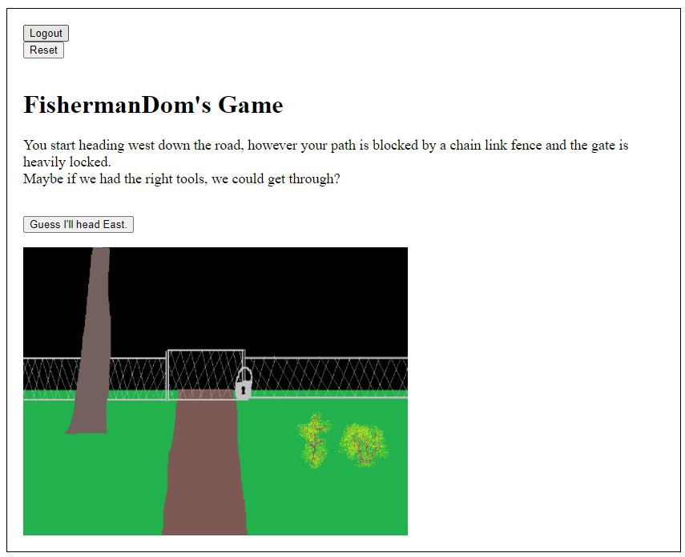

Page Under Construction
For my Php class's big project, I decided to make a game similar to a text based
adventure game (one of those "Look East," "Go South," "Take gold" type games).
Due to the time constrain of the class though, I decided to go with clicking buttons
instead of making a system to recieve text input from the user. The story line is
very cheesy, as I'm not much of a writer. My main pride in this program was designing
the database to hold all of the text of the story and buttons, while bringing the
appropriate text for each new screen you happen upon.
The entire game only has four view pages, a Home (registration) page, Login, Endings,
and the Game page. The Home or Login page gets you into the game, the Game page is
reloaded with new plot context and buttons to make your next move, while the Endings
page reveals how many out of the total amount of endings you have found, along with a
timestamp when you first found that ending.
You'll start the game by either registering a new user, or logging back into an already
registered user. I don't plan on publishing this game, so I required that each username
be unique, while also following standard conventions, such as being 4 to 30 characters
in length, and starting with a letter. The email must be in email format (xxxx@xxxx.xxx),
and the password also has it's criteria.
The buttons are dynamically generated, usually 2-3 per screen, but could go as many as I
could write for. Certain paths you take will make you turn around if you didn't grab an
item at the start of the game. (In recent touchups of this program, I added a reset button,
and a few more images)

Page Under Construction